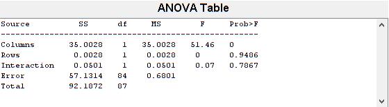
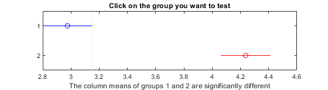
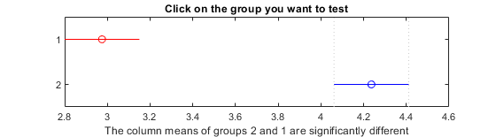
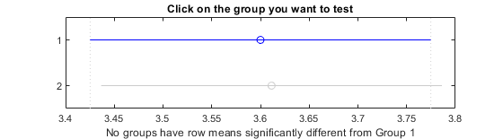
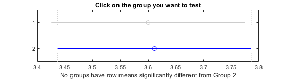

Contents
Before we start
According to the lecutre, we don't have to check for normal distribution, homogenety of variances, observation independence and outliers.
w = warning ('off','all');
Get Data
%Extracting the relevant columns and converting it to matrix. T = readtable('../../gaming_video_quality_dataset.xlsx'); t_filtered = T(T.Condition== 36 | T.Condition == 50,:);
Anova requirements:
1. Depended variables interval or ratio scale: Video quality is on a scale from 1-5
2. Independent variables with two or more groups: the given conditions (36 and 50) for game contains 'Game1' & 'Game6' and for Bitrate the values 2000 and 6000
3. Independence of observation: see above
4. No significant outliers: see above
5. Normal distributed population for every single group: see above
6. Homogeneity of variances: see above
Anova type:
We have given 2 independent variables, so therefore 2 factors. And because we have multiple participants for the factors game and bitrate and therefor multiple values, so it is a repeated measure. The amount of ratings differes, becaus the participants with PID=23-25 only rated for game one. This means our anova is unbalanced.
=> Conduct two-way unbalanced repeated measure anova
Data transformation:
Data transformation for, so it can be used in the anova2 function. Unfortunately there is no function in matlab, which allows a two-way unbalanced repeated measure anova. It's either n-way balanced repeated/unrepeated or n-way unbalanced unrepeated. So we have to delete those rows from PID = 23-25.
t_filtered = t_filtered(t_filtered.PID ~= 23 & t_filtered.PID ~= 24 & t_filtered.PID ~= 25,:); bitrates = unique(t_filtered.Bitrate); games = unique(t_filtered.Game); bitrate_vq_entries =[]; for i=1:length(bitrates) entry.bitrate = bitrates(i); entry.vqs = []; for y=1:length(games) entry.vqs = [entry.vqs, t_filtered(t_filtered.Game == games(y)+"" & t_filtered.Bitrate == bitrates(i),:).VQ']; end bitrate_vq_entries = [bitrate_vq_entries, entry]; end y = []; for i=1:length(bitrate_vq_entries) y = [y bitrate_vq_entries(i).vqs']; end repetitions = size(unique(t_filtered.PID));
Anova
Calculate anova2 function
[p,tbl,stats] = anova2(y,repetitions(:,1));
A p value less 0.05 would be a strong evidence that at l east one mean video quality from one of the games/bitrates differs from one another. Or in other words: changing the game/ increasing the bitrate (independent variables) have a significant effect on the video quality.
disp(p) if(any(p < 0.05)) fprintf("At least one mean video quality from one of the games/bitrate differs significanlty from one another. P-value is: %d\n . Changing the game or bitrate(independent variables) have a significant effect on the video quality." , p(p < 0.05)) else fprintf("No mean video quality from one of the games/bitrates differs significantly from one another. P-value is: %d\n . Changing the game or bitrate(independent variables) have a no significant effect on the video quality." , p(p >= 0.05)) end
0.0000 0.9486 0.7867 At least one mean video quality from one of the games/bitrate differs significanlty from one another. P-value is: 2.653566e-10 . Changing the game or bitrate(independent variables) have a significant effect on the video quality.
Post-hoc Test
Because we have done a balanced anova we could use REGWQ or Tukey. But 'Bonferroni' is also possible.
Each group mean is represented by a symbol, and the interval is represented by a line extending out from the symbol. Two group means are significantly different if their intervals are disjoint; they are not significantly different if their intervals overlap.
For columns (here bitrate):
[c,m,h,nms] = multcompare(stats,'CType','bonferroni');
Note: Your model includes an interaction term. A test of main effects can be difficult to interpret when the model includes interactions. 
Significant differences between the bitrates => Changing the Bitrate increases the video quality.
For rows (here game):
[c_2,m_2,h_2,nms_2] = multcompare(stats,'Estimate','row','CType','bonferroni');
Note: Your model includes an interaction term. A test of main effects can be difficult to interpret when the model includes interactions. 
No Significant differences between the games => Changing the games does not increases the video quality.